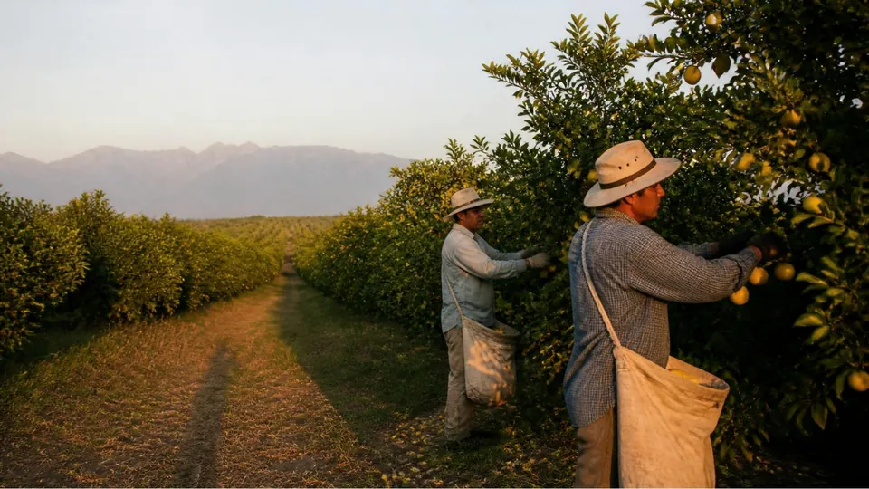

Qué es un circuito de cosechas y cómo funciona la Ruta Norte
Cuatro cosechas encadenadas en un año, con traslado coordinado y dos pausas en casa. Así está pensado el primer circuito de Bandada.

Cada año, unas 150.000 personas siguen las cosechas en la Argentina. Cada campaña dura dos o tres meses. Cuando termina, la cuadrilla vuelve a casa y hay que volver a buscar la próxima. En la cosecha no falta gente ni falta trabajo: están desencontrados.
La idea: encadenar cosechas
Las cosechas de distintas regiones no ocurren al mismo tiempo. Si se ordenan en el calendario, una puede empezar cuando termina la otra. Un circuito de cosechas es eso: una secuencia de tramos que cubre el año, con el traslado entre fincas organizado de antemano.
La Ruta Norte, mes a mes
Es el primer circuito que estamos preparando. Sale de Santiago del Estero y tiene cuatro tramos:
- Febrero a abril: aceituna de mesa en Catamarca.
- Mayo a julio: limón en Tucumán, después de una pausa en casa en mayo.
- Agosto a octubre: arándano en Tucumán. Al terminar, otra pausa en casa.
- Noviembre a enero: despanojado de maíz en Pergamino, Buenos Aires.
En febrero el circuito vuelve a empezar. Los meses salen de fuentes públicas sobre cada cosecha y se van a ajustar con los productores de cada zona.
Qué cambia para cada parte
Para la empresa productora, la cuadrilla llega organizada: 15 personas con un Jefe de Bandada, traslado coordinado y un alojamiento que el productor ofrece y Bandada inspecciona antes de que llegue la cuadrilla. Para quien cosecha, la temporada sigue en la próxima cosecha en lugar de cortarse a los tres meses.
Según una estimación del equipo, una campaña suelta de limón suma unas 95 jornadas en el año. Con los cuatro tramos encadenados, el potencial de largo plazo ronda las 220 jornadas. Es una meta del plan, no una promesa.
Qué falta confirmar
Las fechas del piloto y el detalle de cada tramo se definen con las entrevistas a productores. Lo vamos a contar en este blog y en Instagram.
Fuentes
- Infobae (27/09/2026). Aves de paso: la larga travesía de los 150 mil trabajadores golondrina.
- Calendario de cada cosecha: ver Fuentes y metodología.
- Bandada (2026). Finanzas: Rutas Norte y Sur v2.1, y Logística y Operaciones.